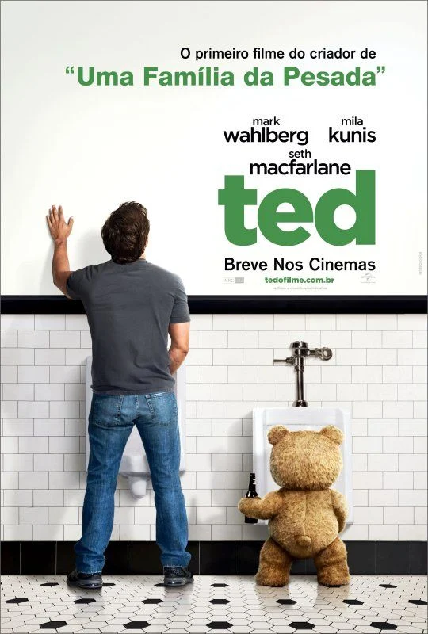
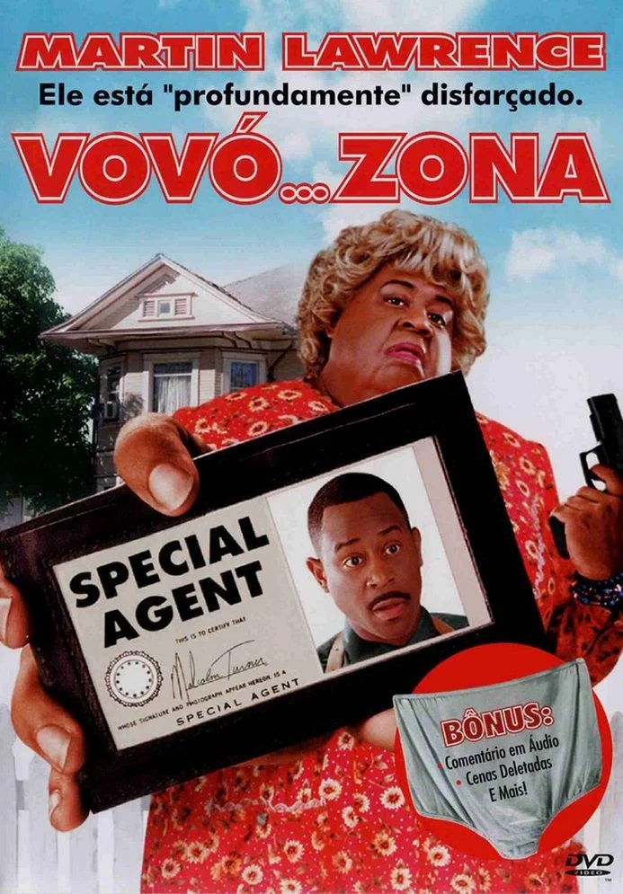

Descrição

Comédia
A HistóriaO pedido de John funciona. O ursinho Ted ganha vida e se torna o melhor amigo do menino.Os anos passam. John cresce e vira adulto, mas continua morando com Ted. O urso se torna um adulto sarcástico, boca suja e festeiro
Trailer
https://www.google.com/search?q=ted+triler&sca_esv=cca38f2fbee4d7a5&rlz=1C1HKFL_pt-PTBR1228BR1230&udm=2&biw=1600&bih=662&sxsrf=APpeQnvwfGFkyYisXVDlDCHWwqu4Tpt0vQ%3A1789151459458&ei=40ikavbCG4f35OUPh7qZ6QE&ved=2ahUKEwi2wMLJlOeWAxWHO7kGHQddJh0Q4dUDegQIBhAN&uact=5&oq=ted+triler&gs_lp=Egtnd3Mtd2l6LWltZyIKdGVkIHRyaWxlckiTW1CME1jLVnACeACQAQCYAZ8BoAGND6oBBDcuMTG4AQPIAQD4AQGYAg2gAtIJwgIFEAAYgATCAgYQABgIGB7CAgYQABgHGB7CAg8QABiABBgKGAsYsQMYgwHCAgcQABiABBgKwgIIEAAYBxgeGArCAggQABiABBixA8ICCxAAGIAEGLEDGIMBwgIKEAAYgAQYigUYQ8ICDRAAGIAEGIoFGEMYsQPCAhAQABiABBiKBRhDGLEDGIMBwgIJEAAYgAQYChgLwgIHEAAYgAQYE8ICBhAAGB4YE8ICCBAAGAgYHhgTwgIIEAAYBRgeGBOYAwCIBgGSBwM1LjigB8NLsgcDMy44uAe_CcIHBzAuNC44LjHIBzyACAE&sclient=gws-wiz-img#sv=CAMSURoyKhBlLURGTW5JeHpBb0IyV3JNMg5ERk1uSXh6QW9CMldyTToOYW84T3Q3MExCWlhkcE0gBCoXCgFzEhBlLURGTW5JeHpBb0IyV3JNGAEwARgHINC0vJEFSggQARgBIAEoAQ
Descrição

Comédia
acompanha o agente do FBI Malcolm Turner (Martin Lawrence), um mestre dos disfarces que precisa capturar um perigoso assaltante de banco que fugiu da prisão
Trailer
https://www.youtube.com/watch?v=4TDvP2I6uN0
Descrição
Ação
(2012) conta a história de Peter Parker (Andrew Garfield), um estudante rejeitado pelos colegas que foi abandonado pelos pais na infância e criado pelos tios Ben
Trailer
https://www.youtube.com/watch?v=6nzNdpJ3qMo